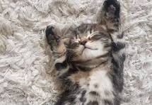

La historia detrás de Pets 🐾
Todo comenzó con Max, un perrito mestizo de orejas despeinadas y una energía inagotable. Cuando llegó a nuestras vidas, nos propusimos darle lo mejor: la mejor alimentación, los juguetes más seguros y los cuidados que realmente merecía. Sin embargo, nos encontramos con un problema que muchos tutores conocen bien: horas buscando en distintos lugares, productos de calidad dudosa y una falta de empatía real hacia lo que significa integrar a un animal en la familia. Ahí se encendió la chispa. Nos preguntamos: ¿Por qué no crear un espacio digital donde cuidar a nuestros compañeros sea fácil, seguro y lleno de cariño? Así nació Pets. Lo que empezó en un pequeño escritorio con un par de repisas y un sueño gigante, se convirtió en tu tienda online de confianza. Nos encargamos de seleccionar minuciosamente cada alimento, accesorio y juguete, garantizando que solo lo mejor llegue hasta la puerta de tu hogar. "Para nosotros, un perro o un gato no es una mascota: es un miembro más de la familia." Hoy, cada paquete que enviamos lleva un objetivo muy claro: provocar un movimiento de cola feliz o un ronroneo de satisfacción. Gracias por confiar en nosotros y por dejarnos ser parte del día a día de tu mejor amigo.
